The Web is for Everyone — An Accessible Path to Search Engine Optimization
Shepherdstown, West Virginia | September 12, 2018

Roy Hewitt
Southeast Region Web Developer
Agenda
- Definitions
- The link between Accessibility and SEO
- What about the CMS?
- Auditing your work
- Questions
Slides are online!
Let's start with some definitions
Search engine optimization (SEO) is often about making small modifications to parts of your website. When viewed individually, these changes might seem like incremental improvements, but when combined with other optimizations, they could have a noticeable impact on your site's user experience and performance in organic search results.
Accessibility is the practice of making your websites usable by as many people as possible — we traditionally think of this as being about people with disabilities, but really it also covers other groups such as those using mobile devices, or those with slow network connections.
— Mozilla
Impairments
- Visual - Blindness/low vision, color blindness
- Auditory - Deafness, degenerative hearing loss
- Mobility - Paralysis, stroke, MS
- Cognition - Epilepsy, autism
The link between SEO and Accessibility
Where do we begin?
Starting with semantics
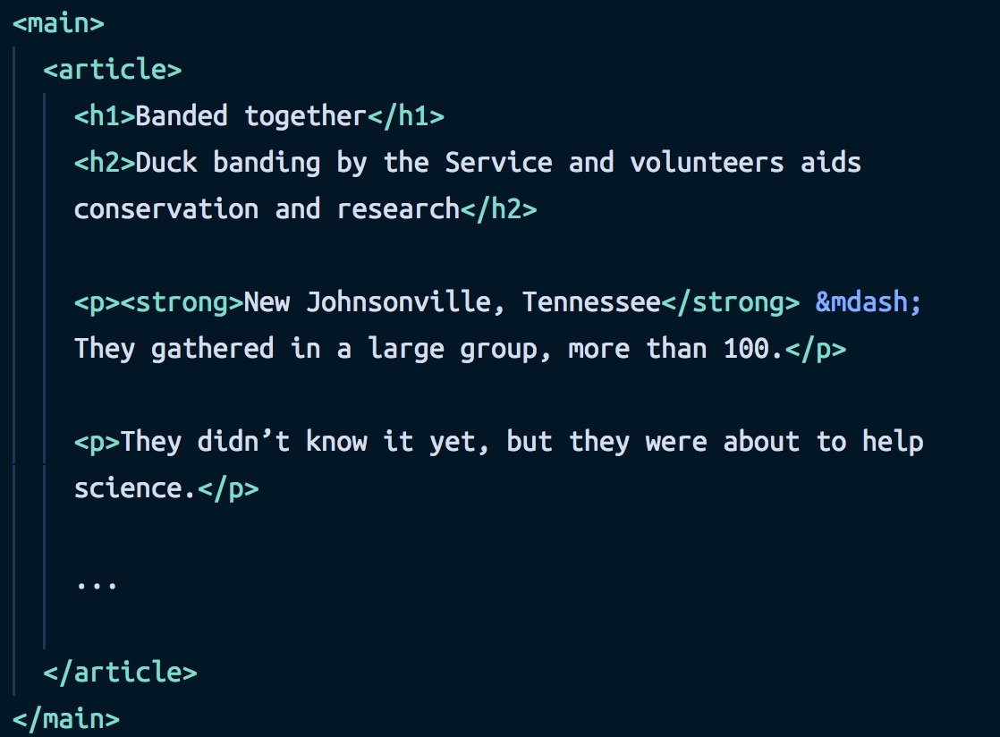The right tool for the job

Separation of concerns

Proper use of headings
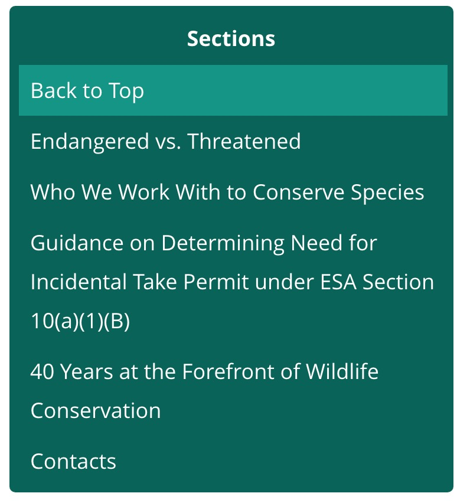Proper use of buttons and links
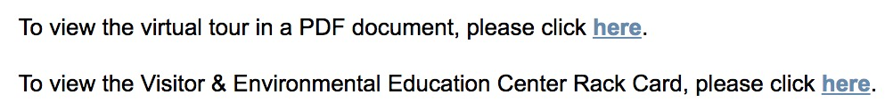Mobile friendly design
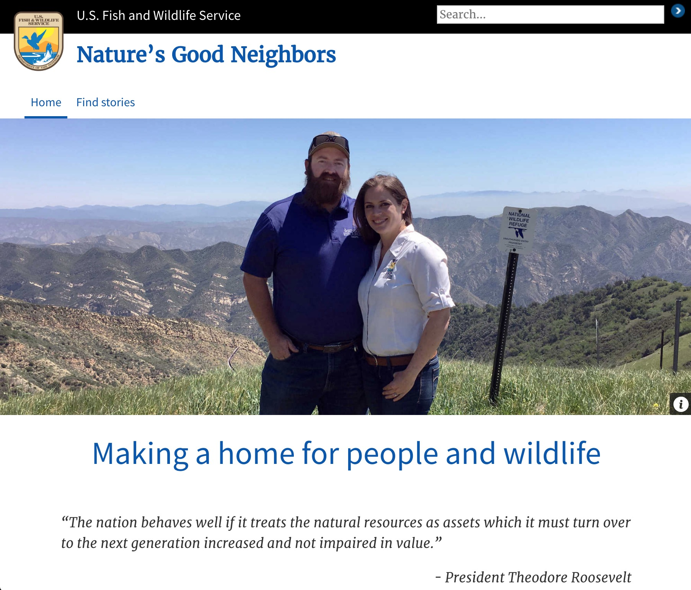
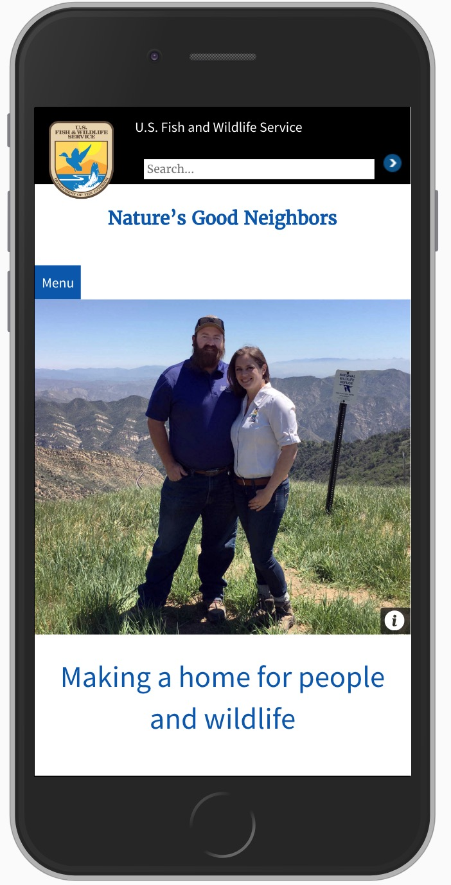
In 2016, Google adds mobile considerations to it's search algorithm.
Performance
Transcripts
- Podcasts
- Audio files
- Video - 'Audio description'
What about the CMS?
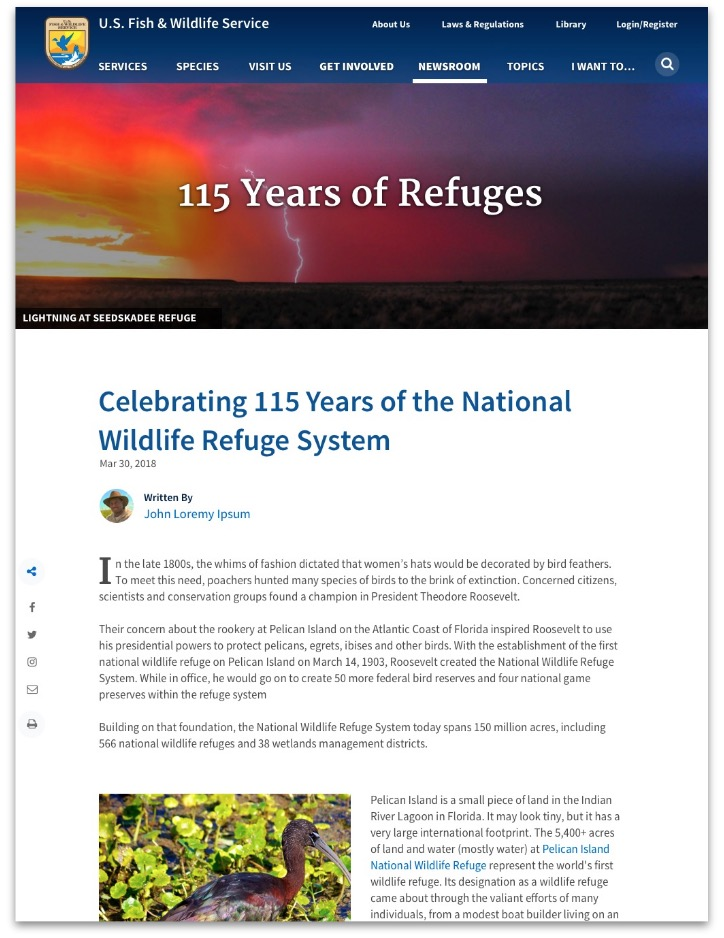Leveraging templates
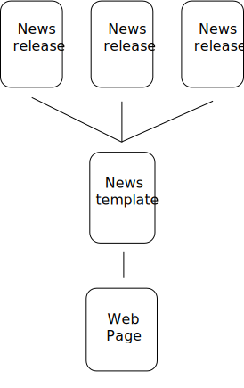Content creation
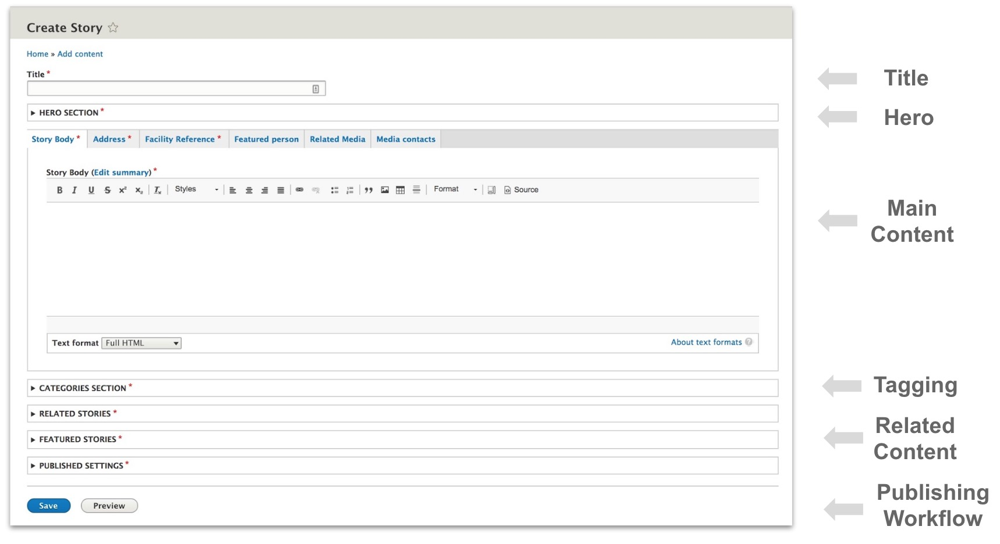Auditing your work
Ever tried a screen reader?
Site Improve
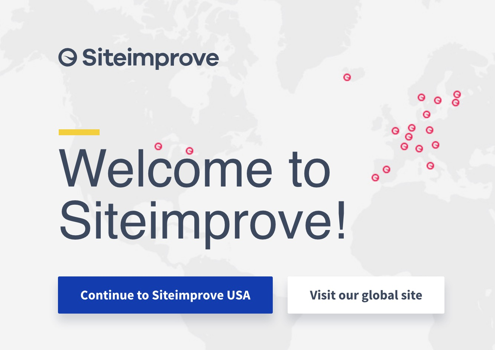- Surface quantitative data on site quality
- Segment data by program or region
- Gamification: compete for the best score!
- Works best if you leverage templates
fws.gov
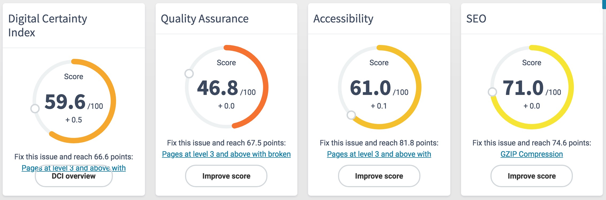fws.gov/southeast
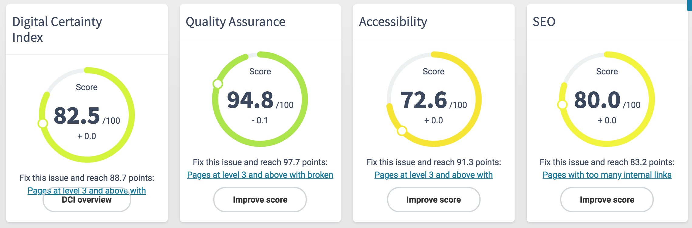*Data accessed on September 9, 2018